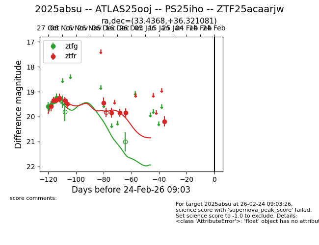
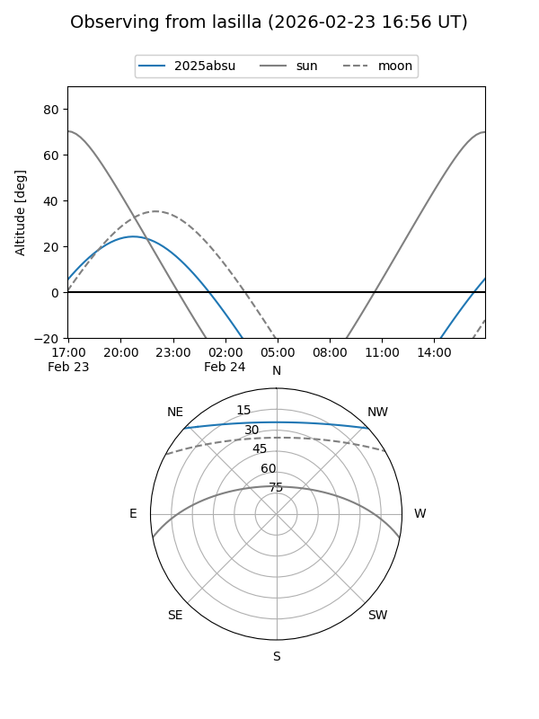
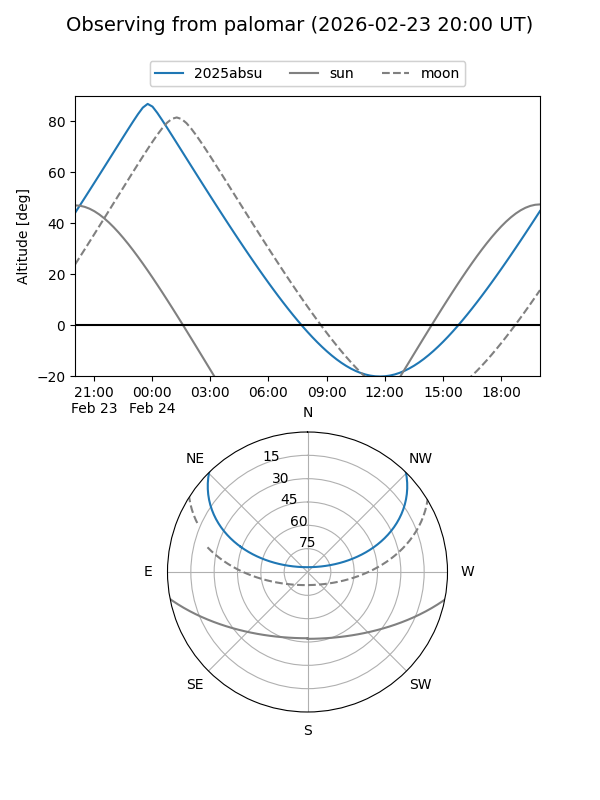
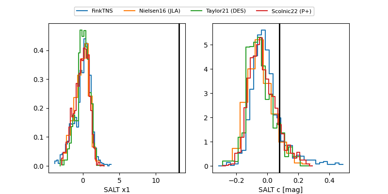

2025absu
Target 2025absu at 2026-01-19 04:20
Aliases and brokers:
FINK: link
Lasair: link
ALeRCE: link
TNS: link
YSE: link
alt names
ZTF25acaarjw (ztf,fink_ztf)
2025absu (tns,yse)
PS25iho (panstarrs)
ATLAS25ooj (atlas)
Coordinates:
equatorial (ra, dec) = 33.4368,+36.32108
equatorial (HMS+DMS) = 02:13:44.84,+36:19:15.89
galactic (l, b) = (140.9407,-23.65565)
Flags:
Photometry:
last ztfg=19.26, ztfr=20.19
4 ztfg, 11 ztfr detections
Lightcurve

Visibility


Additional plots
